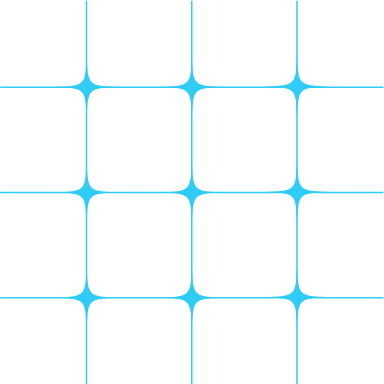
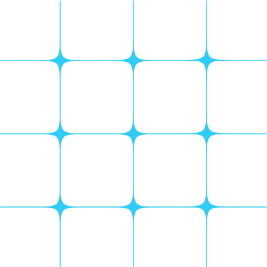

03 - SCIENCE - {The North Pole/Arctic}Point ; Geographic North Pole or Terrestrial North Pole
{북극}점
 

지구의 가장 북쪽 지점
북극해의 가운데에 있으며 {북극}점 지점의 깊이는 4087 m이다. {북극}점은 지구 최북단 지점으로서, 남극점과 직경으로 정반대 지점에 위치해 있다. 측지학상으로는 북위 90도의 기준이 되며 진북의 방향을 삼는 데도 기준이 된다. {북극}점을 기준으로 하면 어느 방향이든 남쪽을 향해 가리키게 되며, 모든 경선이 만나는 지점이기에 어느 경도이든 북극점이 한 축의 기점이 된다. {북극}점 주변의 위선을 따라 반시계 방향으로 돌면 동쪽을 향하고, 시계 방향으로 돌면 서쪽을 향하게 된다. 그밖에 {북극}점은 북반구의 중앙 지점이기도 하다.
북극해의 가운데에 있으며 {북극}점 지점의 깊이는 4087 m이다. {북극}점은 지구 최북단 지점으로서, 남극점과 직경으로 정반대 지점에 위치해 있다. 측지학상으로는 북위 90도의 기준이 되며 진북의 방향을 삼는 데도 기준이 된다. {북극}점을 기준으로 하면 어느 방향이든 남쪽을 향해 가리키게 되며, 모든 경선이 만나는 지점이기에 어느 경도이든 북극점이 한 축의 기점이 된다. {북극}점 주변의 위선을 따라 반시계 방향으로 돌면 동쪽을 향하고, 시계 방향으로 돌면 서쪽을 향하게 된다. 그밖에 {북극}점은 북반구의 중앙 지점이기도 하다.